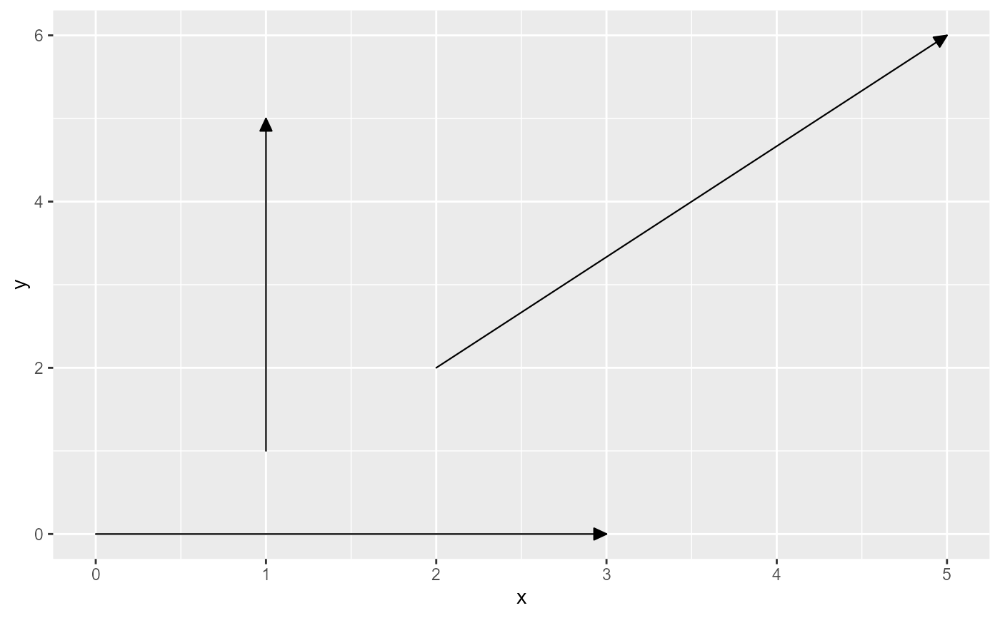
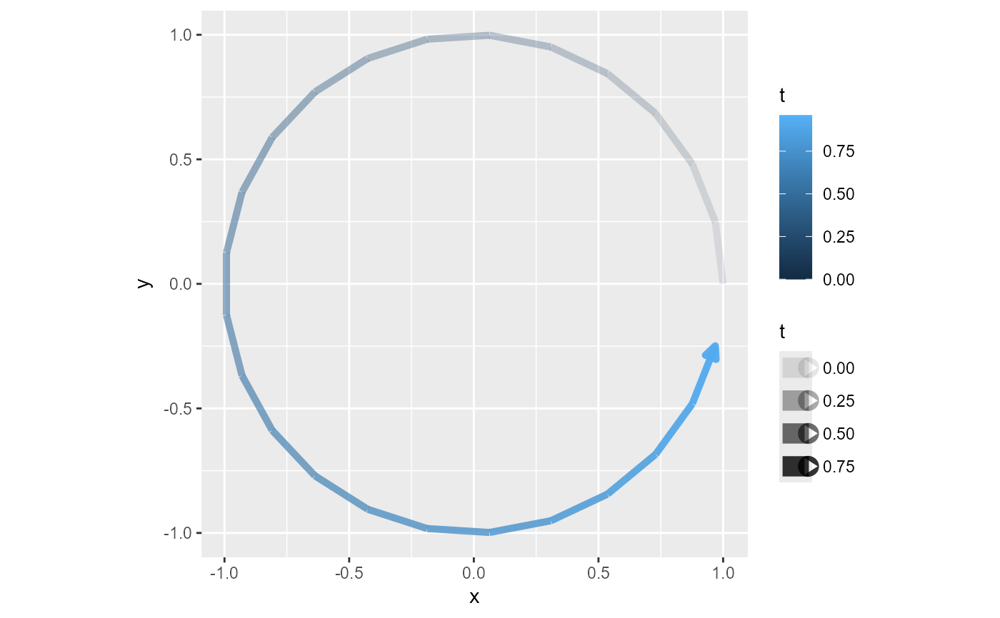
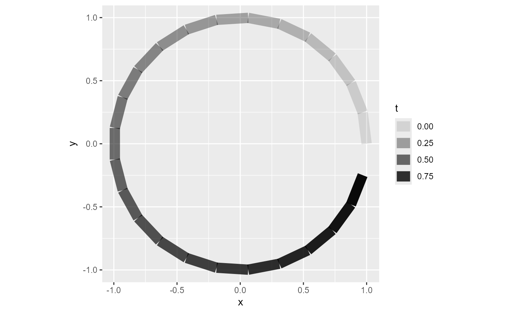
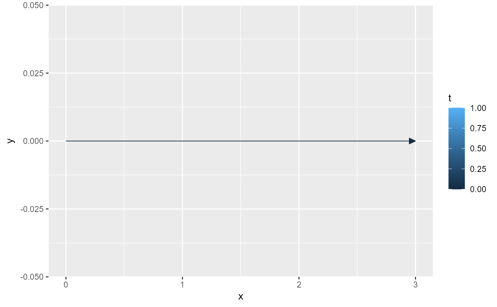
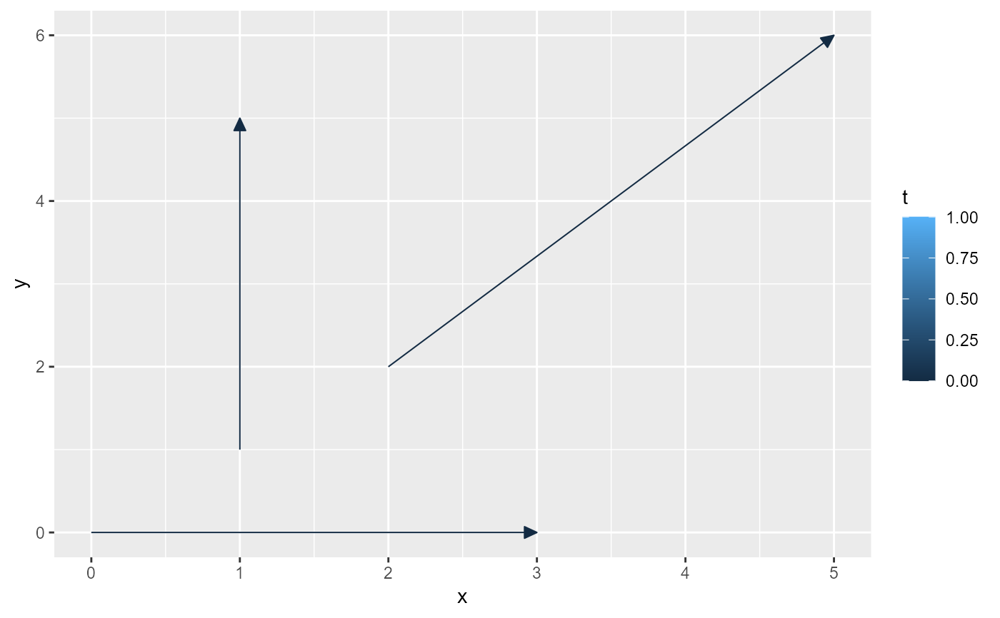

geom_stream() generates a ggplot2 layer that visualizes data as continuous
streams over a temporal variable t. Each stream is defined by the
required aesthetics x, y, and t, and optionally grouped by
group (or mapped from id). Within each group, data points are
automatically ordered by t to form a continuous path.
Usage
geom_stream(
mapping = NULL,
data = NULL,
stat = StatStream,
position = "identity",
...,
na.rm = FALSE,
show.legend = NA,
inherit.aes = TRUE,
arrow.fill = NULL,
lineend = "butt",
linejoin = "round",
linemitre = 10,
arrow = grid::arrow(angle = 25, length = unit(0.025, "npc"), type = "closed")
)
stat_stream(
mapping = NULL,
data = NULL,
geom = GeomStream,
position = "identity",
...,
na.rm = FALSE,
show.legend = NA,
inherit.aes = TRUE,
arrow.fill = NULL,
lineend = "butt",
linejoin = "round",
linemitre = 10,
arrow = grid::arrow(angle = 25, length = unit(0.025, "npc"), type = "closed")
)Arguments
- mapping
A set of aesthetic mappings created by
ggplot2::aes(). Required: Must includex,y, andt; additionally,groupis used to differentiate streams (if not provided,idwill be mapped togroupautomatically).- data
A data frame or other object, as in
grid::layer().- stat
The statistical transformation to use on the data for this layer; defaults to StatStream.
- position
Position adjustment, either as a string or the result of a position adjustment function.
- ...
Other arguments passed to the underlying layers for further customization.
- na.rm
Logical. If
FALSE(the default), missing values are removed with a warning. IfTRUE, missing values are silently removed.- show.legend
Logical. Should this layer be included in the legends?
- inherit.aes
Logical. If
FALSE, overrides the default aesthetics rather than combining with them.- arrow.fill
An optional parameter specifying the color of the arrow head. Defaults to
NULLand inherets fill/alpha ofaes().- lineend
Line end style (round, butt, square).
- linejoin
Line join style (round, mitre, bevel).
- linemitre
Line mitre limit (number greater than 1).
- arrow
An optional
grid::arrow()specification to place arrowheads on the streamline.- geom
The geometric object used to render the streamline (only used in
stat_stream(); defaults to GeomStream).
Details
There are two variants:
geom_stream(): A convenient wrapper that setsstat = StatStreamand uses ggplot2::GeomPath by default.stat_stream(): Provides direct access to the reordering stat (i.e.StatStream) for advanced customization, using GeomStream for drawing.
Aesthetics
geom_stream() and stat_stream() understand the
following aesthetics (required aesthetics are in bold):
x: Horizontal position.y: Vertical position.t: Temporal or ordered variable used to sequence data points. If not provided, a default sequence ranging from 0 to 1 is automatically generated for each group (or for all data if no grouping is provided).group: Grouping variable for multiple streams (automatically mapped fromidif absent).color/colour: Color of the stream. If not provided, it is automatically mapped to the computedtvalue.linetype: Type of line used to draw the stream.linewidth: Thickness of the stream line.alpha: Transparency of the stream.
Details
Data Ordering: If
tis not provided, a default sequence (from 0 to 1) is generated per group (or for the entire dataset if no grouping is specified). Points within each group are then sorted bytprior to drawing the stream.
Computed Variables
These are calculated by the 'stat' part of layers and can be accessed with delayed evaluation.
- norm
This variable is calculated as the Euclidean distance derived from the ranges of the
xandyvalues. It serves as a normalization factor for vector lengths when thenormalizeparameter is active.- avg_spd
Represents the average speed, which is defined as the length of the stream divided by the time it took to traverse that distance.
Examples
n <- 25
s <- seq(0, 1, length.out = n+1)[-(n+1)]
df <- data.frame( "t" = s, "x" = cos(2*pi*s), "y" = sin(2*pi*s) )
ggplot(df) +
geom_stream(aes(x, y, t = t)) +
coord_equal()

ggplot(df) +
geom_stream(aes(x, y, t = t, alpha = t), size = 5) +
coord_equal()
#> Warning: Using `size` aesthetic for lines was deprecated in ggplot2 3.4.0.
#> ℹ Please use `linewidth` instead.

ggplot(df) +
geom_path(aes(x, y, alpha = t), size = 5) +
coord_equal()

stream_1 <- data.frame(
x = c(0, 3),
y = c(0, 0),
t = 0:1
)
stream_2 <- data.frame(
x = c(1, 1),
y = c(1, 5),
t = 0:1
)
stream_3 <- data.frame(
x = c(2, 5),
y = c(2, 6),
t = 0:1
)
streams <- rbind(
cbind(stream_1, id = 1),
cbind(stream_2, id = 2),
cbind(stream_3, id = 3)
)
ggplot(stream_1) +
geom_stream(aes(x = x, y = y, t = t))

# set group aes if multiple vectors
ggplot(streams) +
geom_stream(aes(x = x, y = y, t = t, group = id))
